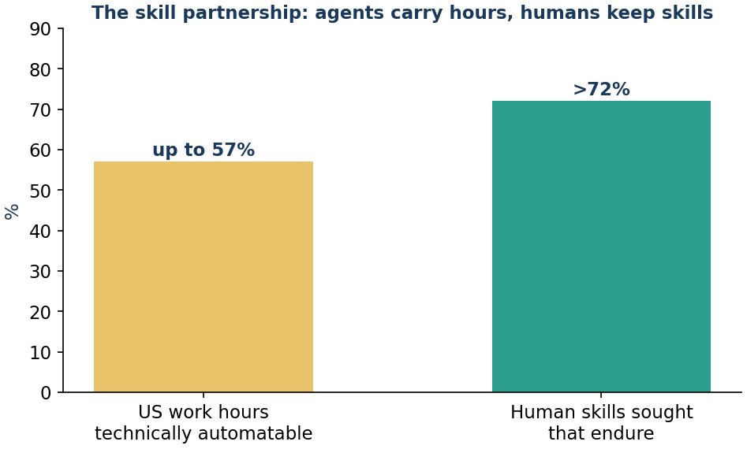
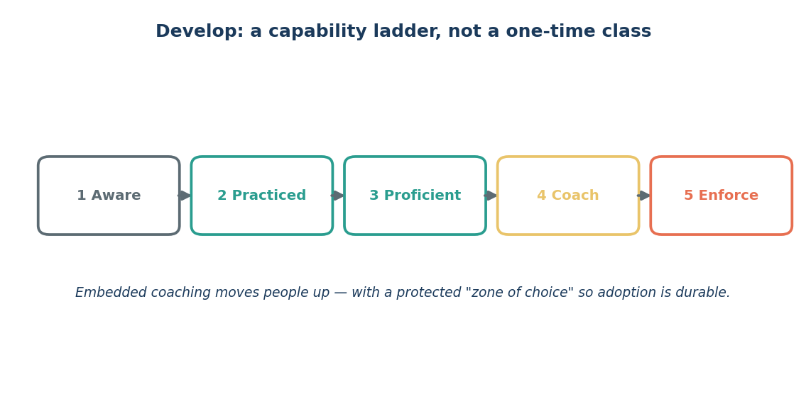

Issue 12 — Commit & Develop: the zone of choice and the skill partnership
When the denial-triage agent was ready for Ana's team, their manager did something quietly wise. She didn't announce a go-live date and a mandate. She gave the team a genuine choice and protected the time to make it: try it for two weeks on your own claims, keep what helps, tell me what doesn't, and we'll decide together. No one was ordered to comply. And that, paradoxically, is why they committed.
This is the Commit rung of the adoption ladder, and its logic is human, not technical. People own what they choose. When adoption is mandated, you get compliance — the box gets ticked and the tool gets quietly worked around. When people are given a real zone of choice, protected time to explore, and permission to say 'this part doesn't work,' you get durable commitment. Choice is what makes it last.
There's an honest, tender part of this rung too: some roles genuinely change, and that deserves acknowledgment, not spin. If a chunk of what you did all day is now handled by an agent, there can be real grief in that — even when the new shape of the job is better. Good managers name that loss instead of papering over it. Pretending nobody feels it is how you lose people's trust.
Then comes Develop, and here's the reassuring truth at the center of this whole series (Figure 12.1). Yes, McKinsey's researchers estimate up to 57% of US work hours are technically automatable. But more than 70% of the human skills organizations actually seek are the enduring ones — judgment, communication, relationship, ethical reasoning — the things agents don't replace. Read those two numbers together and you get the shape of the future: not people replaced by agents, but people in a skill partnership with them. Agents carry the automatable hours; humans bring the enduring skills. Ana's team doesn't shrink to nothing; it levels up to the work only humans can do.

Develop is how you get there — not a one-time training class, but continuous, embedded coaching that moves people up a capability ladder over time (Figure 12.2). You learn it by doing it, with support, at work.

And the human-in-the-loop is the daily expression of the partnership: the agent prepares, the human decides. That's not a temporary safeguard — it's the permanent shape of the collaboration.
Sources
- Commit (zone of choice, grief for redesigned roles); Develop (embedded coaching); up to 57% hours automatable, >70% of sought skills endure — McKinsey / MGI (2026).